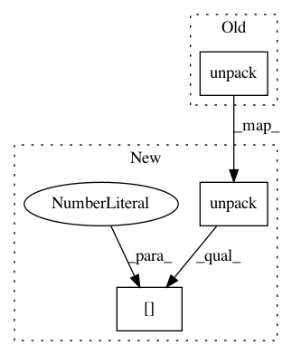

8bcbba8d8443cc4ae076e2364abf1ce4e1430345,spynnaker/pyNN/extra_algorithms/on_chip_bit_field_generator.py,OnChipBitFieldGenerator,_read_back_and_summarise_bit_fields,#OnChipBitFieldGenerator#Any#Any#Any#Any#Any#,137
Before Change
transceiver, placement)
// read how many bitfields there are
n_bit_field_entries = struct.unpack(
"<I", transceiver.read_memory(
placement.x, placement.y,
bit_field_address +
self._OFFSET_TO_N_BIT_FIELD_IN_BYTES,
BYTES_PER_WORD))
reading_address = (
bit_field_address +
self._SIZE_OF_FILTER_REGION_IN_BYTES)
After Change
transceiver, placement)
// read how many bitfields there are
n_bit_field_entries = struct.unpack(
"<I", transceiver.read_memory(
placement.x, placement.y,
bit_field_address +
self._OFFSET_TO_N_BIT_FIELD_IN_BYTES,
BYTES_PER_WORD))[0]
reading_address = (
bit_field_address +
self._SIZE_OF_FILTER_REGION_IN_BYTES)
In pattern: SUPERPATTERN
Frequency: 4
Non-data size: 3
Instances
Project Name: SpiNNakerManchester/sPyNNaker
Commit Name: 8bcbba8d8443cc4ae076e2364abf1ce4e1430345
Time: 2020-08-27
Author: alan.barry.stokes@gmail.com
File Name: spynnaker/pyNN/extra_algorithms/on_chip_bit_field_generator.py
Class Name: OnChipBitFieldGenerator
Method Name: _read_back_and_summarise_bit_fields
Project Name: pyinstaller/pyinstaller
Commit Name: efb9ea4ffc52a8bceb04af87d4e2b7585b1e4f7d
Time: 2015-07-27
Author: mzibr.public@gmail.com
File Name: PyInstaller/loader/pyi_archive.py
Class Name: ZlibArchive
Method Name: checkmagic
Project Name: mindsdb/mindsdb
Commit Name: 1ad1ebe7b359fa0de89460af9cc6ca9a74404cf1
Time: 2020-08-05
Author: stpmax@yandex.ru
File Name: mindsdb/api/mysql/mysql_proxy/data_types/mysql_datum.py
Class Name: Datum
Method Name: setFromBuff
Project Name: SpiNNakerManchester/sPyNNaker
Commit Name: ab5bbf57a6bcbfce7894c6aac1cf26b4385999a4
Time: 2020-08-27
Author: alan.barry.stokes@gmail.com
File Name: spynnaker/pyNN/extra_algorithms/on_chip_bit_field_generator.py
Class Name: OnChipBitFieldGenerator
Method Name: _read_back_and_summarise_bit_fields